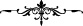

Hz. Peygamber şöyle buyurur:
“Her kul öldüğü şekilde diriltilir.”[89]
Yine o şöyle buyurur:
“Kim sarhoş olarak ölürse, ölüm meleği ile sarhoş olarak karşılaşır; münker ve
nekir ile sarhoş olarak karşılaşır; kıyâmet günü de kandan başka yiyeceği ve içeceği
olmaksızın, içinde, kan akan bir pınar bulunan “sekrân” adlı cehennemin ortasındaki
büyük hendeğe yine sarhoş olarak gönderilir.[90]
Hz. Peygamber şöyle buyurmaktadır: “Cebrâil bana bildirdi ki, Lâ ilâhe illâllah
lafzı, müslümana, ölümü esnasında, kabrinde ve kabrinden çıkarıldığında yoldaşlık
eder.
Yâ
Muhammed!
Başlarından
toprakları
silkeleyerek
kabirlerinden
çıkarıldıklarını keşke görebilseydin. Bazıları Lâ ilâhe illâllah ve el-hamdü lillah
diyor; yüzleri sevinçten parıldıyor; bazıları ise, yüzleri kapkara bir şekilde:
“Allah’a karşı aşırı gitmemden ötürü bana yazıklar olsun.” (ez-Zümer, 39/56) diye
bağrışıyor.
Hz. Peygamber yine şöyle buyurur: “Ölü için bağırıp çağırarak ağıt yakmak câhiliye
âdetlerindendir. Bu şekilde ağıt yakan kadınlar ölmezden evvel tevbe etmezlerse,
kıyâmet günü, üzerlerinde katrandan gömlekler olduğu halde diriltilirler, sonra da
üzerlerine cehennem korundan bir zırh geçirilir.”[91]
Kur’ân-ı Kerîm’de şöyle bir âyet-i kerîme vardır: “Fâiz yiyenler, (kabirlerinden)
ancak şeytanın çarptığı kimsenin kalktığı gibi kalkarlar.” (el-Bakara, 2/275)
Ehl-i te’vîl, âyeti tefsir sadedinde şöyle diyor: Mahşerdekilerin yanında onları rezîl
rüsvây etmek ve cezalandırmak için deli gibi diriltilirler. Allah Teâlâ, fâiz yiyenleri
belirgin bir alâmetle diriltecektir. Şöyle ki fâizin karınlarını devamlı büyütmesini
sağlayacak, bu da onları müthiş hantallaştıracaktır. Böylece, kabirlerinden çıkarlarken
kalkmaya çalışacaklar, ama karınlarının büyüklüğünden ve ağırlığından dolayı yere
düşeceklerdir.
Allah Teâlâ’dan dünyada da âhirette de tüm günahlarımızı gizlemesini niyaz ederiz. O,
bütün fiil ve davranışların en sâlih olanlarını yapabilmemizi sağlayacak yegâne
varlıktır.
[77]. Müsned, VI, 432.
[78]. İbn Hacer, Kâfî, II, 397.
[79]. Buhârî, Şehâdât, 30.
[80]. İbn Mâce, Fiten, 20.
[81]. Irâkî, Muğnî, II, 310.
[82]. Buhârî, Bed’ü’l-Halk, 10; Müslim, Zühd, 51.
[83]. Râmûzu’l-Ehâdis, II, 431.